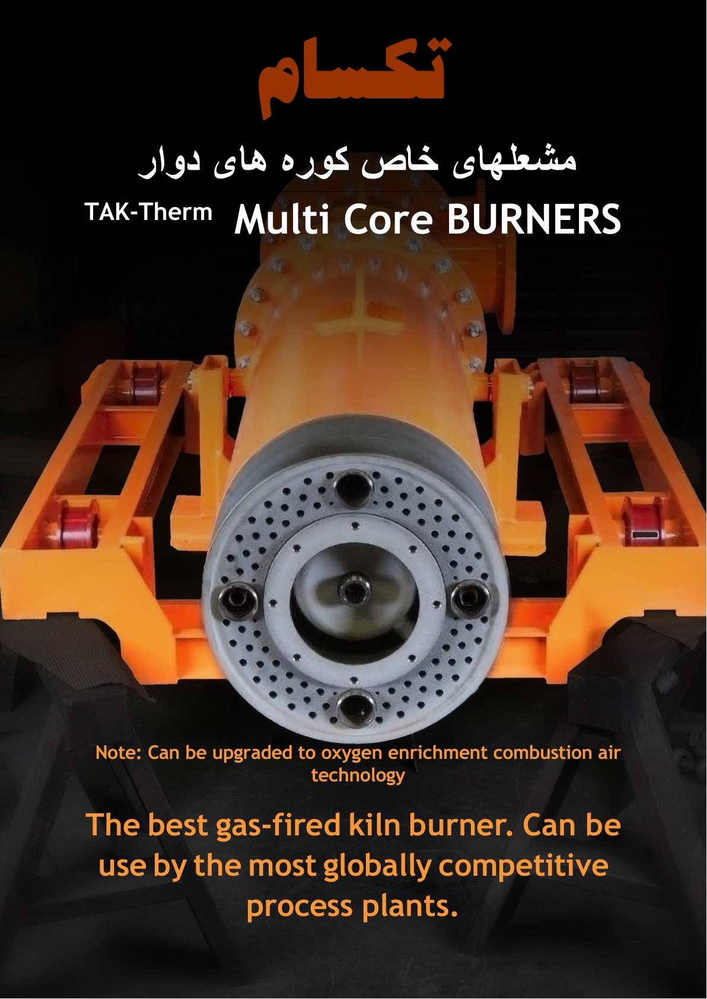
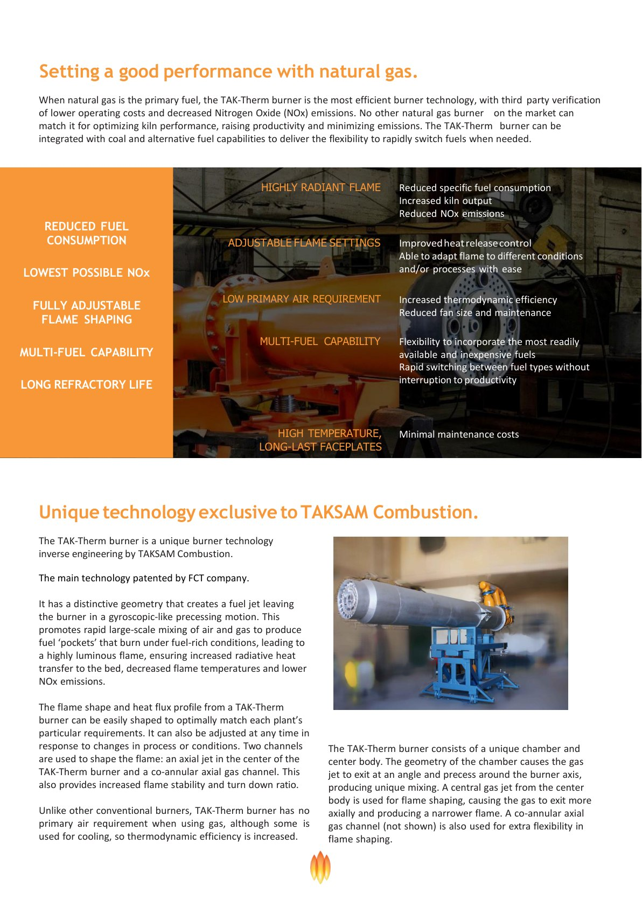
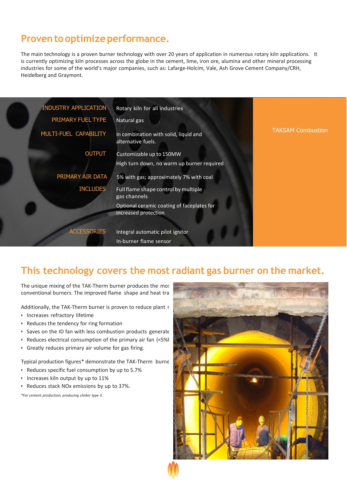
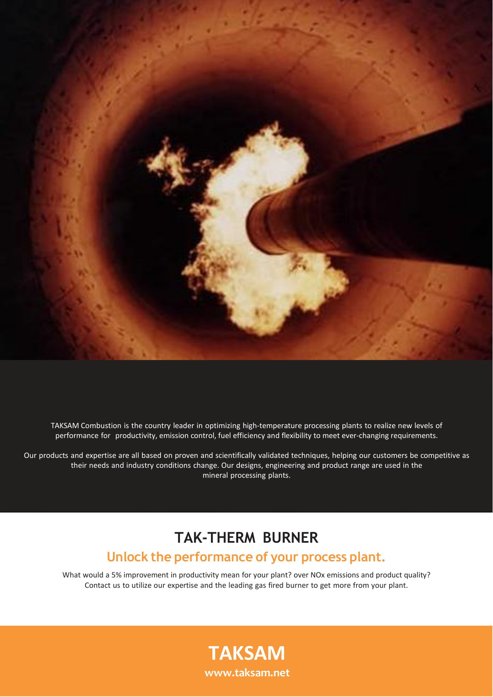

TAKSAM / Products / Catalog
TAK-Therm Multi Core Rotary Kiln Burners
مشعلهای چند هستهای کوره دوار TAK-Therm
Gas-fired multi-core kiln burners for cement, lime, mineral-processing, and high-temperature rotary-kiln applications, with multi-fuel flexibility and optional oxygen-enrichment capability.
مشعلهای گازسوز چند هستهای برای کورههای دوار سیمان، آهک، فراوری مواد معدنی و کاربردهای دمای بالا، با انعطافپذیری چندسوخته و امکان ارتقا به غنیسازی اکسیژن.
Catalog preview: the TAK-Therm rotary-kiln burner catalog highlights adjustable flame shaping, reduced fuel consumption, low NOx, multi-fuel capability, long refractory life, low primary-air requirement, and output customization up to 150 MW. Final specifications depend on kiln, fuel, process, and client requirements.
پیشنمایش کاتالوگ: کاتالوگ مشعل کوره دوار TAK-Therm بر شکلدهی قابل تنظیم شعله، کاهش مصرف سوخت، NOx پایین، قابلیت چندسوخته، افزایش عمر نسوز، نیاز کم به هوای اولیه و امکان سفارشیسازی توان تا ۱۵۰ مگاوات تأکید دارد. مشخصات نهایی وابسته به کوره، سوخت، فرایند و نیاز کارفرماست.



